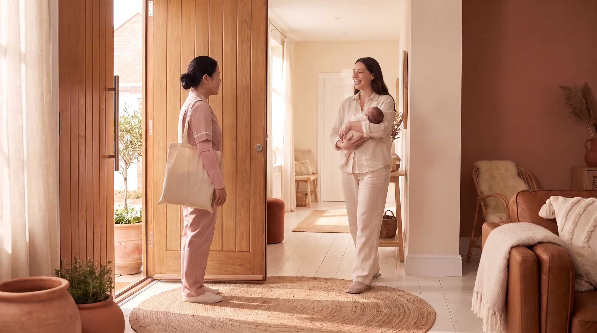
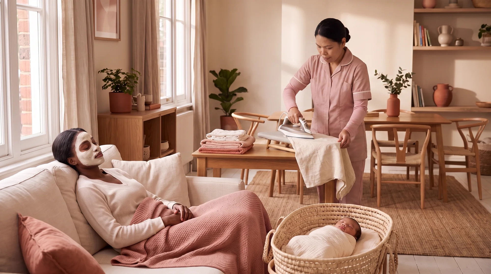
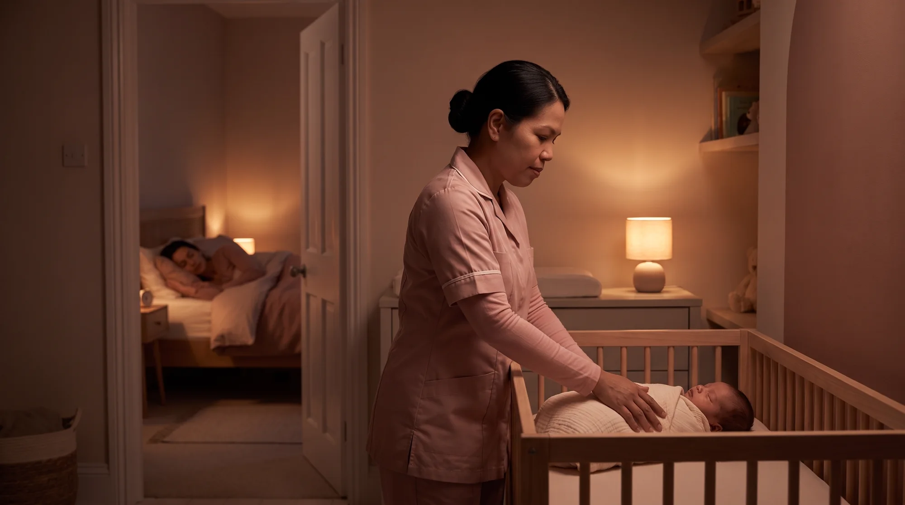

01
Mother and baby
Your baby cared for while you rest. Someone with you on the first walk outside.
Live-in postpartum care
A trained specialist stays with you, from five days to thirty, so your own recovery is the thing being looked after.
Book a consultation


She lets herself in at seven.
You do not have to be awake for it.
She takes the baby, and the morning
stops being yours to manage.
You sleep in the daylight,
which is the part nobody offers you.
Massage, hot stones, belly binding.
The care turns toward you.
A herbal bath, drawn warm,
the way it has been done for forty days.
Three meals a day, cooked in your kitchen.
You do not plan any of them.
Laundry, ironing, the room reset.
The house keeps running without you in it.
You sleep.
Someone else is awake.
Every programme
The same four, whichever programme you choose. What changes is how long they last.
Your baby cared for while you rest. Someone with you on the first walk outside.
Belly binding daily. Herbal baths daily. Massage, hot stones and reflexology through the week.
Three fresh meals a day, cooked in your own kitchen, for you and your family.
Laundry, ironing, light cleaning, the baby wardrobe organised, the groceries collected.
Programmes
Every programme includes the same four areas of care. The longer ones give your recovery more time, and repeat the treatments more often as it progresses.
The first week home, covered.
A full week, with treatments through it.
Treatments move to a weekly rhythm.
The full confinement period, as it is traditionally kept.
Pricing is talked through on the call. Placeholder in this prototype: see the note in the build report.
Ready when you are
Tell us your due date and what the weeks after look like from where you are standing. Nothing is booked on that call.
Book a consultation